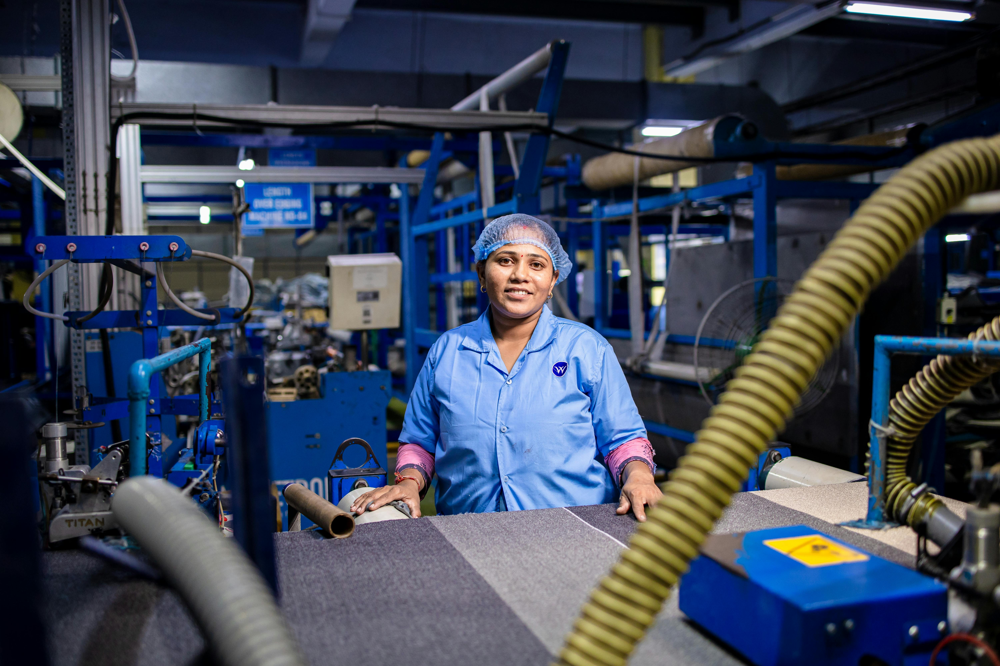

From Waste to Art
We follow a specific process to transform industrial scrap into high-end décor:
- Sourcing: Finding interesting circuit boards and tech parts.
- Cleaning: Stripping the parts to prepare them for assembly.
- Sculpting: Hand-crafting the final modern design.
